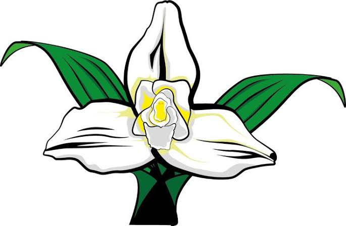
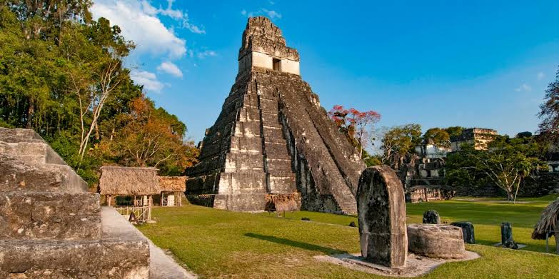
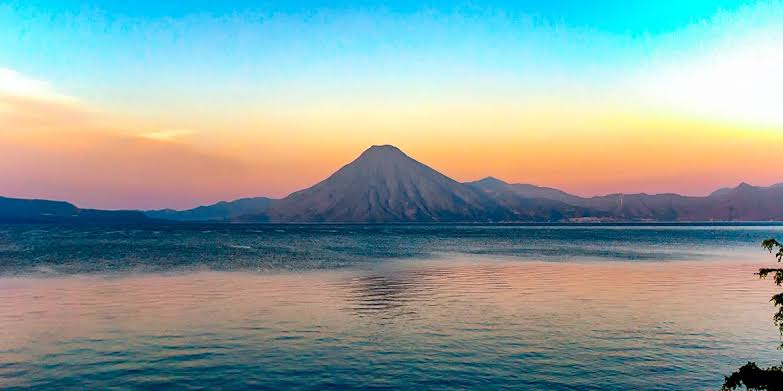

El Quetzal

Ave nacional de plumas verdes y pecho rojo que simboliza la libertad.

Guatemala cuenta con una extensión territorial de 108,889 km². Posee una gran riqueza cultural de herencia maya.
Ave nacional de plumas verdes y pecho rojo que simboliza la libertad.

Flor nacional que representa la pureza y belleza de la naturaleza guatemalteca.

Uno de los yacimientos arqueológicos y centros urbanos más grandes de la civilización maya.

Rodeado por tres volcanes y pintorescos pueblos llenos de cultura viva.